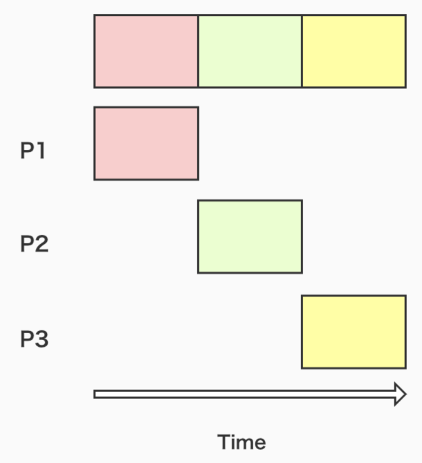
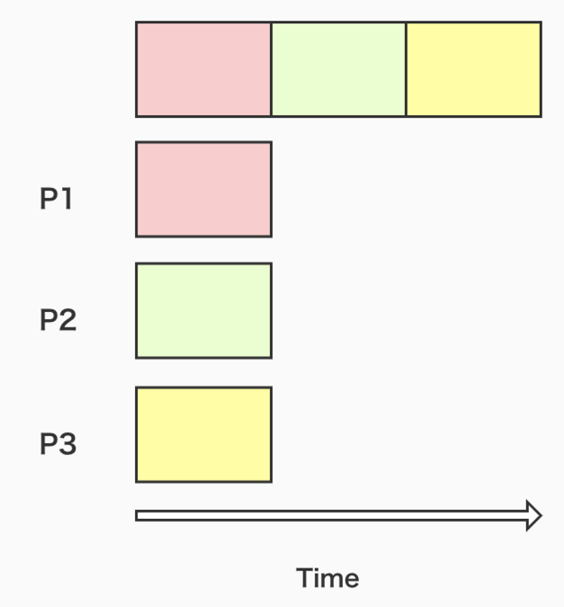
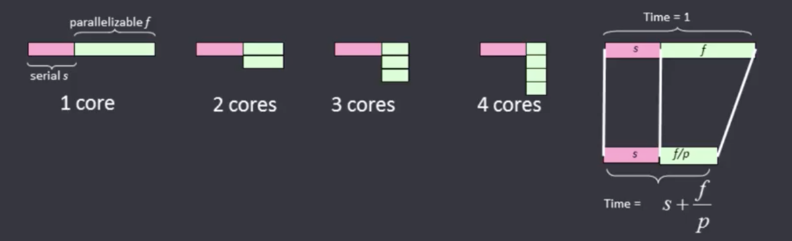
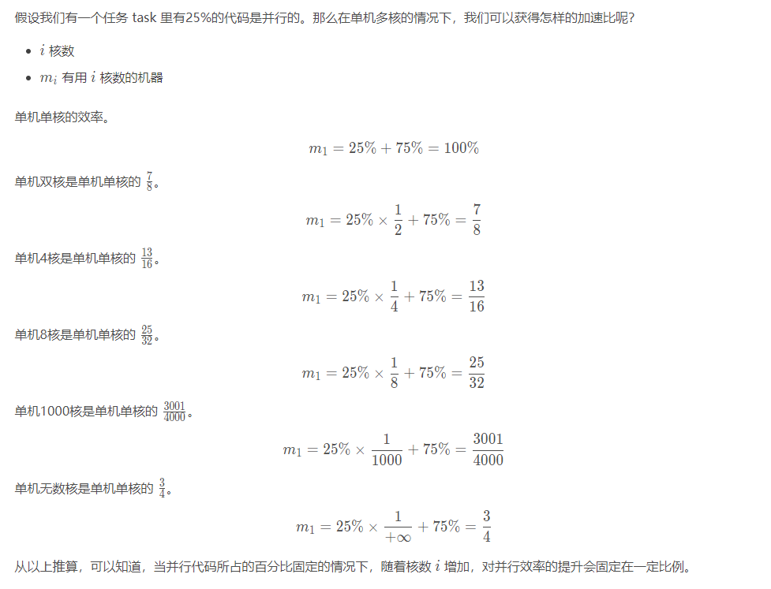
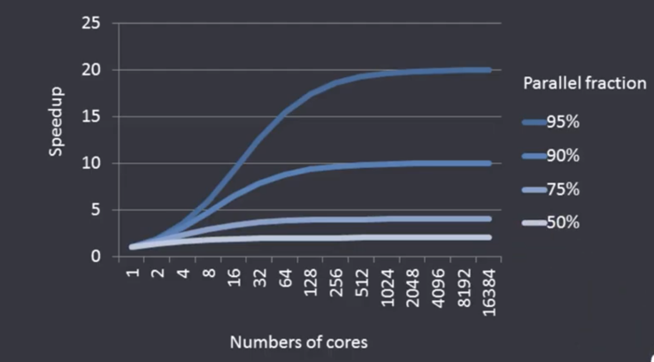

定义
Amdahl 定律：阿姆达尔定律
阿姆达尔定律是计算机系统设计的重要定量原理之一，于 1967 年由 IBM360 系列机的主要设计者阿姆达尔首先提出。该定律是指：系统中对某一部件采用更快执行方式所能获得的系统性能改进程度，取决于这种执行方式被使用的频率，或所占总执行时间的比例。阿姆达尔定律实际上定义了采取增强（加速）某部分功能处理的措施后可获得的性能改进或执行时间的加速比。简单来说是通过更快的处理器来获得加速是由慢的系统组件所限制。、
出发点
基本出发点：
1.对于很多科学计算，实时性要求很高，即在此类应用中时间是个关键因素，而计算负载是固定不变的。为此在一定的计算负载下，为达到实时性可利用增加处理器数来提高计算速度；
2.因为固定的计算负载是可分布在多个处理器上的，这样增加了处理器就加快了执行速度，从而达到了加速的目的。
公式
S=1/(1-a+a/n)
其中，a 为并行计算部分所占比例，n 为并行处理结点个数。这样，当 1-a=0 时，(即没有串行，只有并行)最大加速比 s=n；当 a=0 时（即只有串行，没有并行），最小加速比 s=1；当 n→∞ 时，极限加速比 s→ 1/(1-a），这也就是加速比的上限。 例如，若串行代码占整个代码的 25%，则并行处理的总体性能不可能超过 4。这一公式已被学术界所接受，并被称做“阿姆达尔定律”，也称为“安达尔定理”(Amdahl law)。




